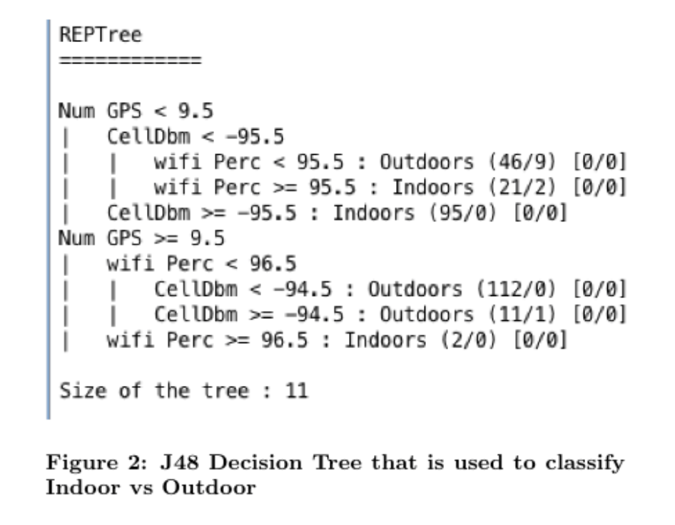
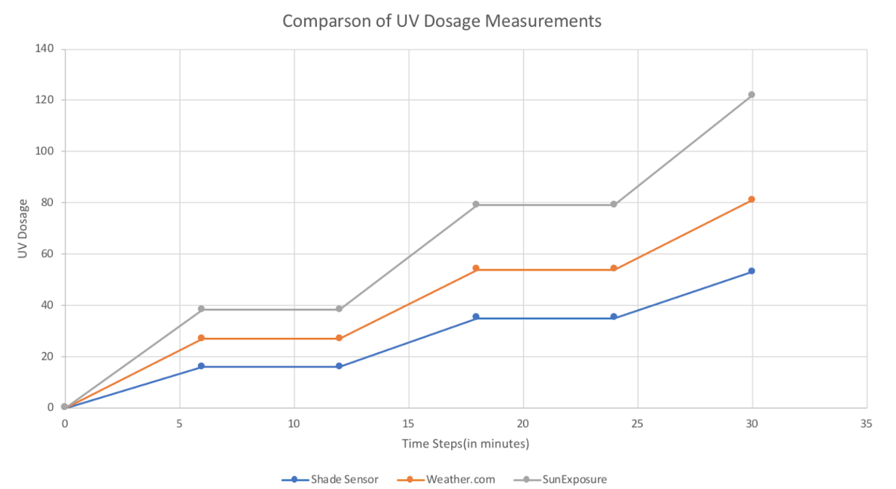
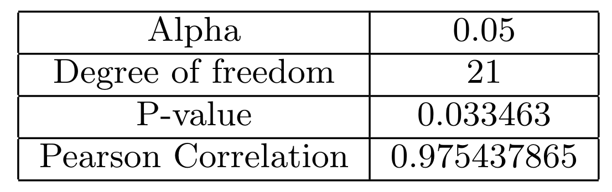

Experiment 1
Methods
As described in the
SunExposure App section, the app collects Wifi signal strength data, cell signal data and GPS data. From this, we extract the following features:
- Number of GPS Satellites
- Wifi Strength Percentage
- Cell Signal DBM
- Cell Signal ASU
- Cell Signal Level
After data collection, the features are inputted into various rule and tree based models using Weka (https://www.cs.waikato.ac.nz/ml/weka/). Based on the results, we choose the decision tree REPTree with a maximum level of 3 as our trained model for indoor
vs. outdoor detection.

Participants were then asked to walk indoors and outdoors at certain times, using both the SunExposure app and a Shade sensor.
Results
Our result show that the REPTree model can successfully predict where a user is indoors vs outdoors based on the smartphone data. TABLE Additionally, the graph shows a that the SunExposure system currently overestimates the accumulated UV dosage, while
the Shade sensor is underreporting UV dosage. However, the app and sensor have high correlation.


Experiment 2
Methods
Participants are asked their understanding of their own UV exposure each time they complete the questionnaire, which asks questions about the user's time outdoors and perceived maximum UV Index. The SunExposure app then presents the true maximum UV Index
of the user for that day and presents a fact about UV exposure. The experiment compares the first reported self-report of UV understanding to the last self-report.
Results
The results of our t-test for before and after self-reported understanding of UV exposure are a t-statistic of 0.475 and a p-value of 0.649. Since the p-value is greater than alpha = 0.05, we do not reject the null hypothesis, and therefore
conclude that the before and after results have a difference of 0.
The repetitive nature of self-reporting understanding of UV each time the questionnaire is taken could be impacting the results. This is because users are less likely to notice differences in their understanding day-to-day, but rather may
realize that their understanding has changed considerably after a few weeks or a few months using the SunExposure app. As a result, in as part of the future work, we propose that more experimentation be conducted with this questionnaire,using
less frequent polling over longer stretches of time.